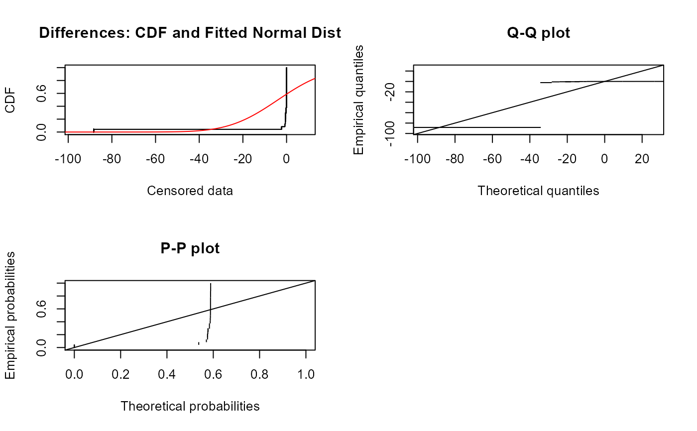
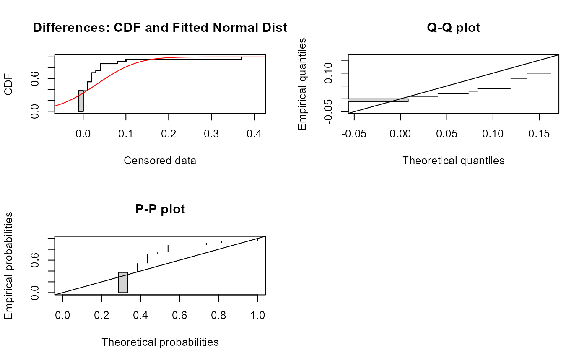

Performs a parametric test of whether the mean difference between two columns of paired censored data equals 0. Assumes that the paired differences follow a gaussian (normal) distribution.
cen_paired(xd, xc, yd, yc, alternative = "two.sided")
| xd | The first column of data values plus detection limits |
|---|---|
| xc | The column of censoring indicators, where 1 (or |
| yd | The second column of data values plus detection limits, or a single number representing a standard / guideline value. |
| yc | The column of censoring indicators for yd, where 1 (or |
| alternative | The usual notation for the alternate hypothesis. Default is |
A list of statistics containing the following components:
n Number of observations
Z The value of the test statistic
p.value the p-value of the test
Mean difference the mean difference between xd and yd
You may also test for whether the mean of the xd data exceeds a standard by entering the single number for the standard as yd. In that case no yc is required.
Helsel, D.R., 2011. Statistics for Censored Environmental Data using Minitab and R, 2nd ed. John Wiley & Sons, USA, N.J.
#> Censored paired test for mean(atrazine$June - atrazine$Sept) equals 0. #> alternative hypothesis: true mean difference does not equal 0. #> #> n = 24 Z= -1.0924 p-value = 0.2747 #> Mean difference = -3.927# Comparing standard/guieline value cen_paired(atrazine$June, atrazine$JuneCen, 0.01, alternative = "greater")#> Censored paired test for mean(atrazine$June) equals 0.01 #> alternative hypothesis: true mean atrazine$June exceeds 0.01. #> #> n = 24 Z= 2.1004 p-value = 0.01785 #> Mean atrazine$June = 0.04231